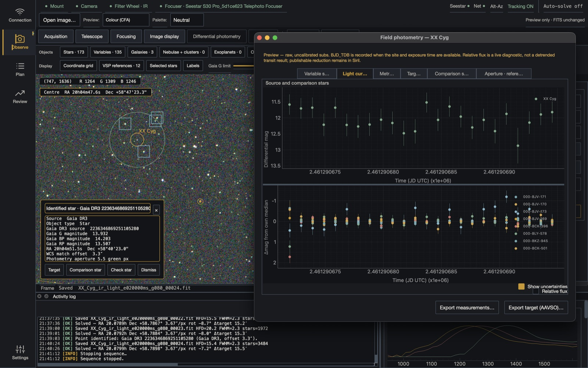
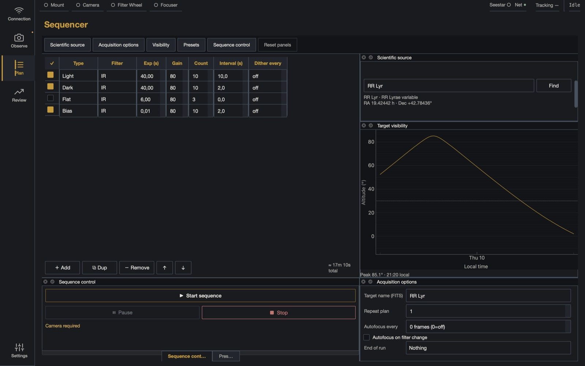
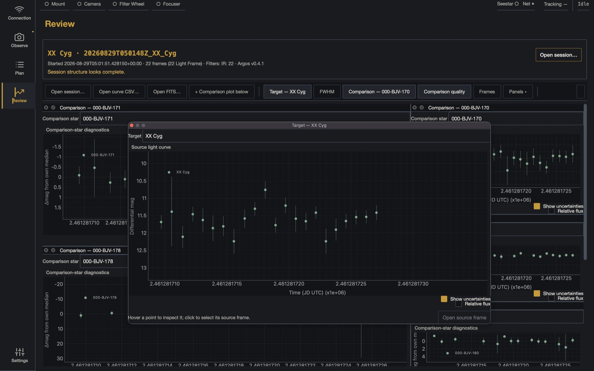
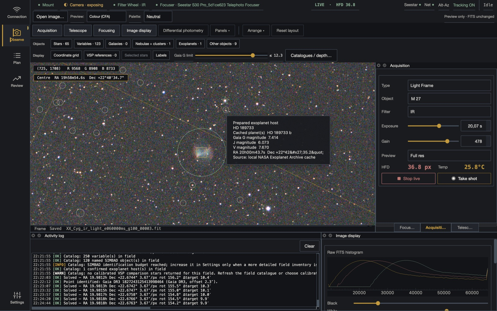

Plate solving
ASTAP recovers the WCS from the frame. Every pixel becomes a coordinate, on every frame of the run.
 ARGOS
GitHub ↗
ARGOS
GitHub ↗
ARGOS 0.4.1 / free software, GNU GPL v3
A desktop workspace for variable-star observing with ZWO Seestar telescopes. Record a timed sequence, follow relative brightness as the frames arrive, and review each point against the image that produced it.
Its own software stops at the picture. ARGOS starts at the measurement.
macOS and Debian · installers and release notes

01 · The frame
Flux comes from the array. Time, plate scale, gain and airmass come from the header — and a light curve needs all of them.
DATE-AVGThe midpoint, not the start. A 60-second sub is otherwise half a minute wrong.
BAYERPATGRBG, not RGGB. Debayer with the wrong one and the photometry is quietly wrong.
EGAIN RDNOISENo error bar without them. The noise model works in electrons; the file stores ADU.
FOCALLEN XPIXSZ3.74″ per pixel on an S30 Pro. An aperture measured in pixels means nothing without it.
AIRMASSHow much atmosphere the star sat behind — what you correct against as it sets.
IMAGETYPLight, dark, flat or bias, in the folders Siril expects. Point it at the session and go.
Every keyword is listed in the FITS reference. Debayer, stretch or stack once and none of it comes back.
02 · The session
Variable stars · Exoplanet transits · Knowing the night worked before you pack up
Before the night
Type a designation — RR Lyr, M57, HD 189733. The built-in Messier/NGC/IC tables, AAVSO VSX and SIMBAD resolve it to J2000 coordinates, the altitude curve says when it clears your horizon, and a GoTo you trigger yourself sends the mount there.
Then build the run: light, dark, flat and bias steps, each with its own exposure, gain and frame count, and the total duration on screen before the first frame. It records unattended.


After the night
Reopen the session folder with no telescope connected, on any machine. The target's curve, each comparison star measured on its own, and the night's telemetry frame by frame — FWHM, HFD, star count, sky level, eccentricity, sensor temperature.
Click a point and it names the frame behind it, then opens that FITS. Export the curve in AAVSO Extended Format; the raw frames are already in the folder layout Siril reads.
03 · Field identification
Solve it with ASTAP, then let the catalogues do the naming — and the choosing.
ASTAP recovers the WCS from the frame. Every pixel becomes a coordinate, on every frame of the run.
Gaia DR3 for the field stars, AAVSO VSX for the variables, SIMBAD for deep-sky and cross-IDs, the NASA archive for transit hosts. Cached, so the field still works with no signal.
ARGOS pulls the AAVSO VSP sequence, measures each candidate on a test frame, and proposes the comparison stars — on signal, brightness match and distance. Override any of it.

04 · One result
ARGOS gives you the raw FITS frames. Siril — free image-processing software — calibrates and registers them, and the star_var_script extension turns them into a calibrated light curve. That is the scientifically valid measurement, and this is one.

Timed FITS frames, a live differential curve, and the run-level uncertainty floor.
Dark, flat and bias calibration, then registration of the untouched raw frames.
Final photometry and the AAVSO export. ARGOS applies the same systematic-floor model live, so both share one uncertainty contract.
The curve you watch during the night is a quick-look on uncalibrated subs: it tells you the run is working, not what the star did. The measurement comes out of the reduction — which is why ARGOS keeps every raw frame, and why that reduction stays independent and auditable.
05 · Requirements